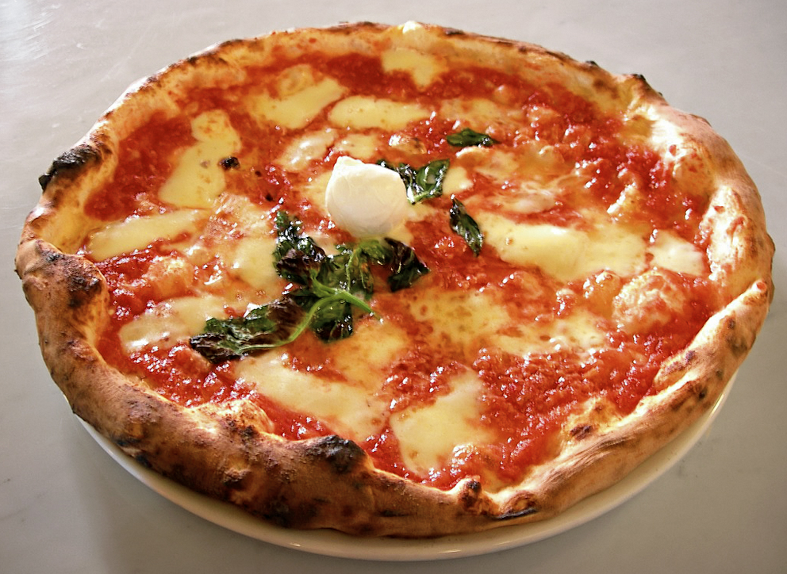
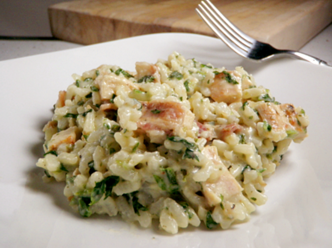

Italy
Italy, a European country with a long Mediterranean coastline, has left a powerful mark on Western culture and cuisine.
Italy's capital, Rome, is home to the Vatican as well as landmark art and ancient ruins. Other major cities include Florence, with Renaissance masterpieces such as Michelangelo’s "David" and Brunelleschi's Duomo; Venice, the city of canals; and Milan, Italy’s fashion capital.
Mediterranean Italian cuisine includes much of Italy outside the north and the mountainous inland regions. It is a diverse cuisine, but among its best-known and most characteristic foods are risotto, pizza in Neapolitan and Sicilian styles, and pasta dishes such as spaghetti.
